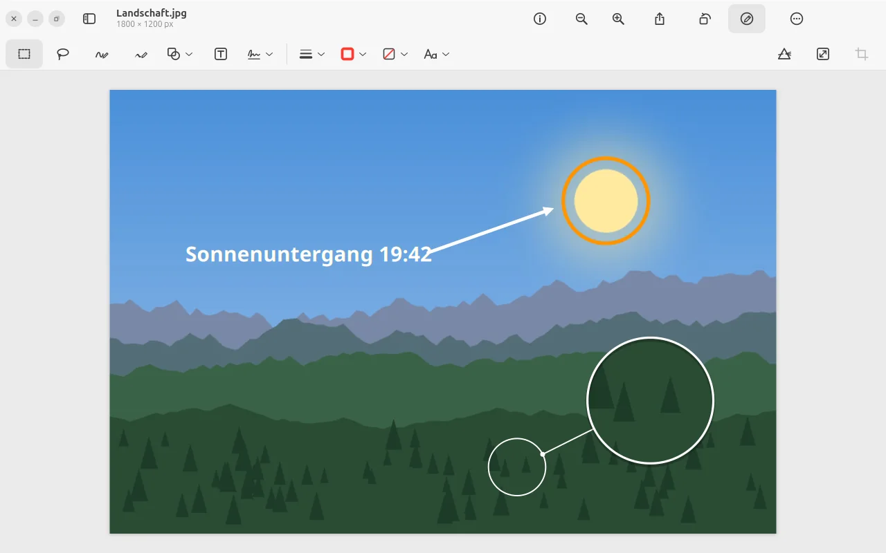
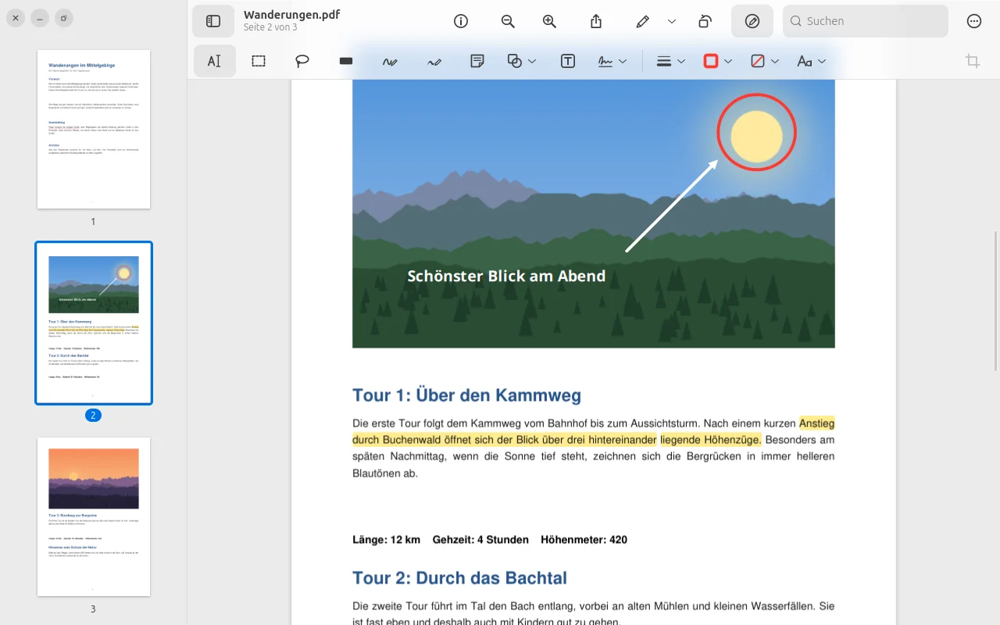
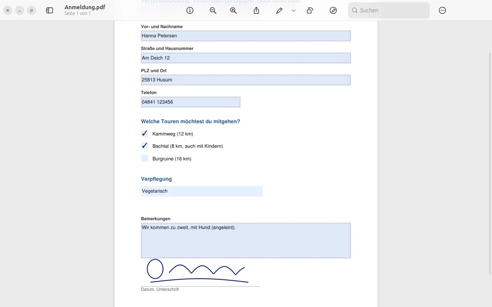
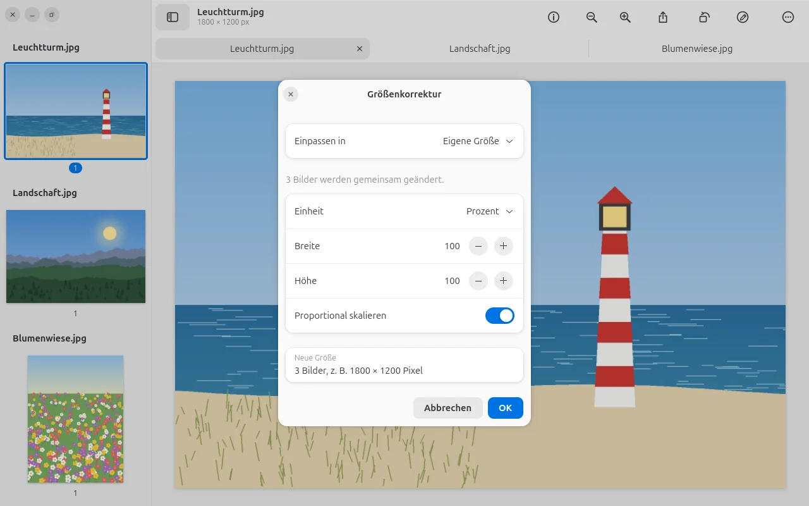

Formen, Pfeile, Text.
Und eine Lupe.
Auf Fotos wie auf PDFs. Die Lupe vergrößert eine Stelle und zeigt mit einer Linie, woher sie stammt. Alles bleibt bearbeitbar, auch nach dem Sichern.

Skizzieren, das
schön wird.
Ein krummer Kreis wird ein sauberer Kreis, ein zittriger Pfeil ein gerader. Mit Grafiktablett oder Stift wird die Linie dicker, je fester du drückst.
Die Seite fließt unter
der Leiste weiter.
Die Symbolleiste ist aus Glas: Beim Scrollen schimmert das Dokument weich darunter durch. Zoomen und Scrollen gleiten sanft dorthin, wo dein Mauszeiger steht. Lieber schlicht? „Transparenz reduzieren“ in den Einstellungen.

Ausfüllen. Unterschreiben.
Fertig.
Felder, Kästchen und Auswahllisten direkt im PDF, mit Tab zum nächsten Feld. Die Unterschrift zeichnest du – oder du fotografierst sie auf Papier, und Prevux macht saubere Linien daraus.

Viele Bilder.
Eine Größe.
Mehrere Bilder markieren und gemeinsam anpassen: einpassen in gängige Größen, in Pixel, Prozent oder Zentimeter – mit oder ohne Neuberechnung.
